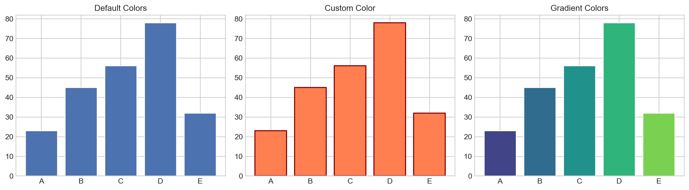

flowchart LR
A["原始数据"] --> B["分析处理"]
B --> C["可视化"]
C --> D["发现洞察"]
D --> E["传达故事"]
style C fill:#e8f5e9
10 数据可视化
注记本章概要
- 课时：2课时（第10周）
- 目标：用可视化讲述数据背后的故事
10.1 学习目标
完成本章后，你将能够：
- 选择合适的图表类型
- 使用 Matplotlib 和 Seaborn 绑制图表
- 让 AI 帮你美化图表
10.2 可视化的目的
为什么需要可视化？
| 纯数字 | 可视化 |
|---|---|
| 平均分：78.5，标准差：12.3 | 一眼看出分布形态 |
| 班级1：82，班级2：75，班级3：80 | 一眼比较差异 |
| A与B相关系数：0.85 | 一眼看出趋势 |
提示好的可视化
- 准确：真实反映数据
- 清晰：一眼看懂
- 美观：吸引观看
10.3 选择合适的图表
flowchart TD
A["你想展示什么？"] --> B{"数据类型"}
B -->|"趋势/时间变化"| C["📈 折线图"]
B -->|"大小比较"| D["📊 柱状图"]
B -->|"分布情况"| E["📉 直方图/箱线图"]
B -->|"两变量关系"| F["🔵 散点图"]
B -->|"占比/比例"| G["🥧 饼图"]
B -->|"多变量比较"| H["🔥 热力图"]
style C fill:#e3f2fd
style D fill:#e8f5e9
style E fill:#fff3e0
style F fill:#f3e5f5
style G fill:#fce4ec
style H fill:#fff9c4
图表选择速查
| 目的 | 推荐图表 | Matplotlib 方法 |
|---|---|---|
| 趋势变化 | 折线图 | plt.plot() |
| 数量比较 | 柱状图 | plt.bar() |
| 分布形态 | 直方图 | plt.hist() |
| 离散分布 | 箱线图 | plt.boxplot() |
| 变量关系 | 散点图 | plt.scatter() |
| 比例构成 | 饼图 | plt.pie() |
| 矩阵数据 | 热力图 | sns.heatmap() |
10.4 Matplotlib 进阶
自定义样式
import matplotlib.pyplot as plt
import numpy as np
# 设置全局样式
plt.style.use('seaborn-v0_8-whitegrid')
# macOS 中文字体配置
plt.rcParams['font.sans-serif'] = ['PingFang SC', 'Heiti SC', 'STHeiti', 'Arial Unicode MS']
plt.rcParams['axes.unicode_minus'] = False
plt.rcParams['font.size'] = 12
# 数据
x = np.linspace(0, 10, 100)
y1 = np.sin(x)
y2 = np.cos(x)
# 创建图表
fig, ax = plt.subplots(figsize=(10, 6))
# 绑制线条
ax.plot(x, y1, 'b-', linewidth=2, label='sin(x)')
ax.plot(x, y2, 'r--', linewidth=2, label='cos(x)')
# 添加标题和标签
ax.set_title('Trigonometric Functions', fontsize=16, fontweight='bold')
ax.set_xlabel('x', fontsize=12)
ax.set_ylabel('y', fontsize=12)
# 添加图例
ax.legend(loc='upper right', fontsize=11)
# 添加网格
ax.grid(True, linestyle='--', alpha=0.7)
# 设置坐标轴范围
ax.set_xlim(0, 10)
ax.set_ylim(-1.5, 1.5)
plt.tight_layout()
plt.show()
颜色和样式
import matplotlib.pyplot as plt
import numpy as np
fig, axes = plt.subplots(1, 3, figsize=(14, 4))
# 数据
categories = ['A', 'B', 'C', 'D', 'E']
values = [23, 45, 56, 78, 32]
# 1. 默认颜色
axes[0].bar(categories, values)
axes[0].set_title('Default Colors')
# 2. 自定义单色
axes[1].bar(categories, values, color='coral', edgecolor='darkred', linewidth=1.5)
axes[1].set_title('Custom Color')
# 3. 渐变色
colors = plt.cm.viridis(np.linspace(0.2, 0.8, len(categories)))
axes[2].bar(categories, values, color=colors)
axes[2].set_title('Gradient Colors')
plt.tight_layout()
plt.show()
10.5 Seaborn：统计可视化
Seaborn 是基于 Matplotlib 的高级库，专注于统计图表。
import seaborn as sns
import matplotlib.pyplot as plt
import pandas as pd
import numpy as np
# 设置样式
sns.set_theme(style="whitegrid")
# macOS 中文字体配置（必须在 set_theme 之后）
plt.rcParams['font.sans-serif'] = ['Arial Unicode MS', 'PingFang SC', 'Heiti SC']
plt.rcParams['axes.unicode_minus'] = False
# 创建示例数据
np.random.seed(42)
n = 100
df = pd.DataFrame({
'班级': np.random.choice(['1班', '2班', '3班'], n),
'成绩': np.concatenate([
np.random.normal(75, 10, 33),
np.random.normal(80, 12, 33),
np.random.normal(85, 8, 34)
])[:n]
})
# 创建多图
fig, axes = plt.subplots(1, 3, figsize=(14, 4))
# 1. 箱线图
sns.boxplot(data=df, x='班级', y='成绩', ax=axes[0], palette='Set2')
axes[0].set_title('Box Plot')
# 2. 小提琴图
sns.violinplot(data=df, x='班级', y='成绩', ax=axes[1], palette='Set3')
axes[1].set_title('Violin Plot')
# 3. 分布图
for cls in df['班级'].unique():
subset = df[df['班级'] == cls]['成绩']
axes[2].hist(subset, alpha=0.5, label=cls, bins=15)
axes[2].legend()
axes[2].set_title('Distribution by Class')
axes[2].set_xlabel('Score')
plt.tight_layout()
plt.show()
相关性热力图
import seaborn as sns
import matplotlib.pyplot as plt
import pandas as pd
import numpy as np
# macOS 中文字体配置
plt.rcParams['font.sans-serif'] = ['Arial Unicode MS', 'PingFang SC', 'Heiti SC']
plt.rcParams['axes.unicode_minus'] = False
# 创建示例数据
np.random.seed(42)
n = 50
df = pd.DataFrame({
'语文': np.random.randint(60, 100, n),
'数学': np.random.randint(60, 100, n),
'英语': np.random.randint(60, 100, n),
'物理': np.random.randint(60, 100, n),
'化学': np.random.randint(60, 100, n)
})
# 使数学和物理有较强相关性
df['物理'] = df['数学'] * 0.8 + np.random.randint(-10, 10, n)
df['物理'] = df['物理'].clip(0, 100)
# 计算相关系数
correlation = df.corr()
# 绘制热力图
plt.figure(figsize=(8, 6))
sns.heatmap(correlation, annot=True, cmap='coolwarm', center=0,
fmt='.2f', linewidths=0.5, square=True)
plt.title('Subject Correlation Heatmap')
plt.tight_layout()
plt.show()
10.6 实战：成绩分析仪表板
import matplotlib.pyplot as plt
import pandas as pd
import numpy as np
# macOS 中文字体配置
plt.rcParams['font.sans-serif'] = ['Arial Unicode MS', 'PingFang SC', 'Heiti SC']
plt.rcParams['axes.unicode_minus'] = False
# 生成模拟数据
np.random.seed(42)
n = 100
df = pd.DataFrame({
'姓名': [f'学生{i+1}' for i in range(n)],
'班级': np.random.choice(['1班', '2班', '3班'], n),
'语文': np.random.normal(75, 12, n).clip(30, 100).astype(int),
'数学': np.random.normal(72, 15, n).clip(30, 100).astype(int),
'英语': np.random.normal(78, 10, n).clip(30, 100).astype(int)
})
df['总分'] = df['语文'] + df['数学'] + df['英语']
# 创建仪表板布局
fig = plt.figure(figsize=(14, 10))
fig.suptitle('Student Performance Dashboard', fontsize=16, fontweight='bold', y=0.98)
# 1. 总分分布（左上）
ax1 = fig.add_subplot(2, 3, 1)
ax1.hist(df['总分'], bins=15, color='steelblue', edgecolor='white', alpha=0.8)
ax1.axvline(df['总分'].mean(), color='red', linestyle='--', label=f'Mean: {df["总分"].mean():.1f}')
ax1.set_title('Total Score Distribution')
ax1.set_xlabel('Total Score')
ax1.legend()
# 2. 各科平均分（上中）
ax2 = fig.add_subplot(2, 3, 2)
subjects = ['语文', '数学', '英语']
means = [df[s].mean() for s in subjects]
colors = ['#ff6b6b', '#4ecdc4', '#45b7d1']
bars = ax2.bar(subjects, means, color=colors, edgecolor='white', linewidth=2)
ax2.set_title('Average by Subject')
ax2.set_ylim(0, 100)
for bar, mean in zip(bars, means):
ax2.text(bar.get_x() + bar.get_width()/2, bar.get_height() + 2,
f'{mean:.1f}', ha='center', fontsize=10)
# 3. 班级比较箱线图（右上）
ax3 = fig.add_subplot(2, 3, 3)
df.boxplot(column='总分', by='班级', ax=ax3)
ax3.set_title('Total Score by Class')
plt.suptitle('') # 移除自动标题
# 4. 语文vs数学散点图（左下）
ax4 = fig.add_subplot(2, 3, 4)
scatter = ax4.scatter(df['语文'], df['数学'], c=df['总分'], cmap='viridis', alpha=0.6)
ax4.set_xlabel('Chinese')
ax4.set_ylabel('Math')
ax4.set_title('Chinese vs Math')
plt.colorbar(scatter, ax=ax4, label='Total')
# 5. 等级分布饼图（下中）
ax5 = fig.add_subplot(2, 3, 5)
def get_grade(score):
if score >= 270: return 'A (≥270)'
elif score >= 240: return 'B (240-269)'
elif score >= 180: return 'C (180-239)'
else: return 'D (<180)'
df['等级'] = df['总分'].apply(get_grade)
grade_counts = df['等级'].value_counts()
colors = ['#2ecc71', '#3498db', '#f1c40f', '#e74c3c']
ax5.pie(grade_counts, labels=grade_counts.index, autopct='%1.1f%%',
colors=colors, explode=[0.05]*len(grade_counts))
ax5.set_title('Grade Distribution')
# 6. Top 10 学生（右下）
ax6 = fig.add_subplot(2, 3, 6)
top10 = df.nlargest(10, '总分')[['姓名', '总分']].sort_values('总分')
ax6.barh(top10['姓名'], top10['总分'], color='coral')
ax6.set_xlabel('Total Score')
ax6.set_title('Top 10 Students')
plt.tight_layout()
plt.subplots_adjust(top=0.93)
plt.show()
10.7 让 AI 帮你美化图表
Prompt 模板
我用 Matplotlib 绑制了一个柱状图，请帮我美化：
要求：
- 使用专业配色方案
- 添加数据标签
- 优化字体大小
- 添加适当的标题和轴标签
- 去除上方和右侧边框
- 添加网格线
原始代码：
[粘贴代码]保存高质量图片
# 保存为 PNG（适合网页）
plt.savefig('chart.png', dpi=300, bbox_inches='tight', facecolor='white')
# 保存为 PDF（适合印刷）
plt.savefig('chart.pdf', bbox_inches='tight')
# 保存为 SVG（适合缩放）
plt.savefig('chart.svg', bbox_inches='tight')10.8 课后作业
完成作业 4：数据可视化仪表板
本周任务：提交最终版本
- 完成数据清洗后的可视化
- 绘制至少 6 种不同图表
- 整合为仪表板布局
- 添加 AI 生成的洞察描述
提交截止：本周日
10.9 本章小结
- 选择图表：根据目的选择合适的图表类型
- Matplotlib：Python 绑图的基础，灵活但需要更多代码
- Seaborn：统计可视化专用，代码更简洁，图表更美观
- 美化技巧：配色、标签、网格、字体
- 让 AI 帮忙：描述需求，让 AI 优化代码
flowchart LR
A["数据"] --> B["选择图表"]
B --> C["基础绘制"]
C --> D["美化调整"]
D --> E["保存/展示"]
下一章，我们将学习API 调用——从网络获取数据。